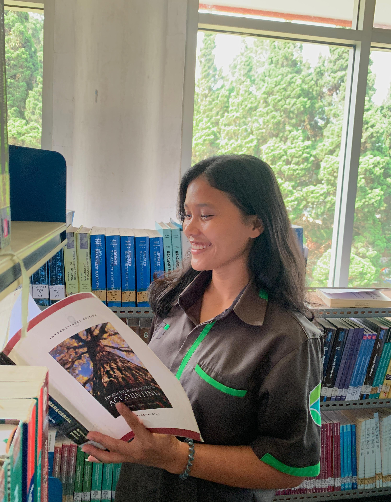

Hello There!

Hello there, Welcome to my humble website.
My name is Loyar Agustina Purba, majoring in Information Systems, I come from North Sumatra, precisely
in Rantau Parapat and now I am struggling at UNAI with great hopes for a bright future.